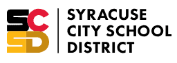
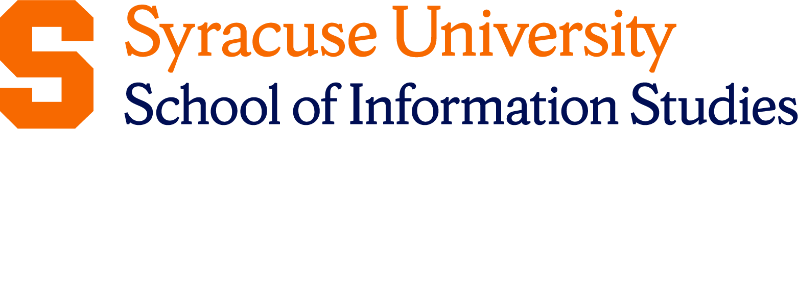
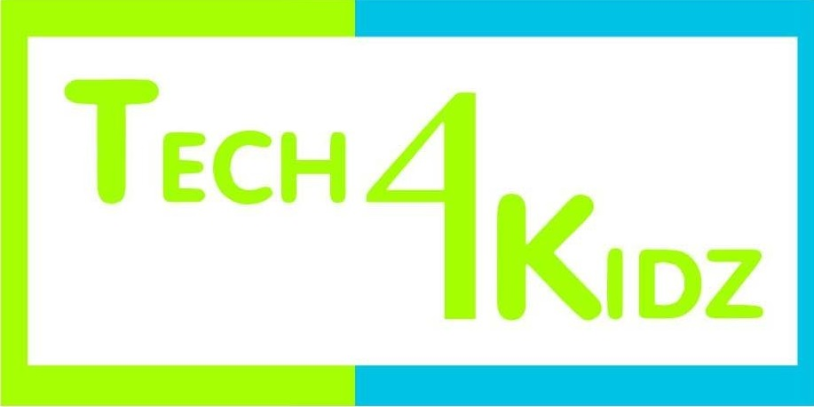

About AT&T ‘Cuse Digital Experience
Brought to you by: The Museum of Science and Technology, Tech4Kidz, and Syracuse University
-
AT&T
AT&T is committed to advancing education, strengthening communities, and improving lives. Through its philanthropic initiatives and partnerships, AT&T and the AT&T Foundation support projects that create opportunities, make connections, and address community needs where we - and our customers - live and work.
-

MOST Museum of Science and Technology
The Milton J. Rubenstein Museum of Science & Technology (MOST) is a hands-on science and technology museum for all ages. The MOST hosts numerous STEM education programs and community outreach events annually and is home to 35,000 square feet of interactive permanent and traveling exhibits. The MOST's vision is to be a preeminent science and technology center, inspiring all generations through hands-on education and entertainment.
Through initiatives and organizations like Syracuse Surge, Centerstate CEO, Genius NY/Tech Garden, the CNY Drone Corridor, Terrakeet, IBM, local universities, and more, Syracuse has emerged as a burgeoning center of technological growth and innovation. Generating community interest and understanding of these developments, as well as training future workforce leaders, starts with engaging young, passionate students curious about ongoing advancements and cutting-edge technologies. The goal of this program is not only to broaden and deepen student understanding of the exciting technological developments in their community, but to provide opportunities for them to then share that knowledge and excitement with their families, friends, MOST visitors, and the wider population. The end product will be a digital showcase designed by the students through daily web design reflection sessions facilitated by Syracuse University, with a small reception in the MOST Syracuse Innovation Station honoring the work of the students to educate themselves and their community.
-

Syracuse City School District
The Syracuse City School District educates more than 21,000 students each day, from pre-kindergarten through 12th grade. Our vision is to prepare and inspire all of our students to innovate locally and contribute globally and we are embracing the challenge of giving all of our students a vibrant education with new urgency.
-

Syracuse University
Syracuse University is a private research university that advances knowledge across disciplines to drive breakthrough discoveries and breakout leadership. Our collection of 13 schools and colleges with over 200 customizable majors closes the gap between education and action, so students can take on the world. In and beyond the classroom, we connect people, perspectives and practices to solve interconnected challenges with interdisciplinary approaches. Together, we're a powerful community that moves ideas, individuals, and impact beyond what's possible.
Syracuse University's School of Information Studies (iSchool) seeks to build and maintain collaborative partnerships with others seeking to instill Information Technology and Digital Fluency skills to students who currently face a scarcity of resources either in their family, community, or educational opportunities. With the support of AT&T, and our partners at Tech4Kidz and the MOST we offer a number of skills and resources. Specific to this experience it is important to help young students recognize the successful acquisition of Digital Literacy skills and careers in STEM related fields are not limited by gender or socioeconomic background.
-

Tech4Kidz
Tech4kidz offers educator workshops, classes to kids ages 8-15 as well as engineering/coding camps during the summer. These classes promote computational thinking and provide kids with problem solving skills they will apply in all areas of school. Our goal is to engage kids in technology at an early age and make them confident users of the technology that is all around them. To learn more about us, visit us at www.tech4kidz.net.
The goal of the AT&T 'Cuse Digital Experience is to teach digital literacy skills to middle school students. The summer experience will be hands-on and will cover a broad range of topics such as what it means to be a good digital citizen cybersecurity, coding, effective use of search engines, information bias, and tools for digital collaboration. The program will end with a final project in which students design avatars of themselves and blog about their learning journey.